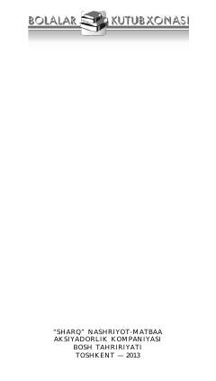

SNShaytonvachchaning odamlar orasidagi qiziqarli va ibratli sarguzashtlari davom etadi.
Ushbu asar Shaytonvachchaning sarguzashtlari davomi bo'lib, u shaytonlikdan odam qiyofasiga o'tib qolgan qahramonning murakkab hayotiy voqealarini hikoya qiladi. Muallif kitobni ota-onalar farzandlari bilan birgalikda o'qib, muhokama qilishlarini tavsiya etadi.